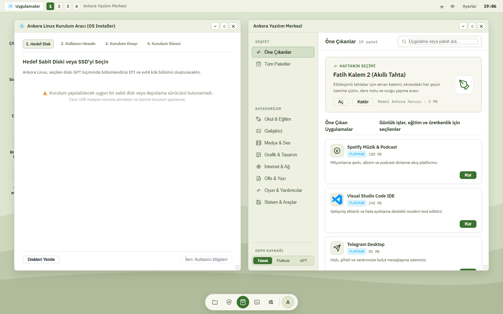

Sakin, systemd’siz Türkçe masaüstü.
Devuan 6 Excalibur ve Linux 6.12 LTS üzerinde çalışan AyazDE 5.0.



Hafiflik, öngörülebilirlik ve bütüncül Türkçe tasarım
Tauri 2.0 + Rust (/usr/bin/ayaz-de)
Panel, dosyalar ve mağaza tek ikilide çalışır; kapalı pencereler 30 sn sonra bellekten silinir.
Dört yüz ve Ankora AI balonu
Bostan açılışta gelir; tek tıkla Bakır, Cıvata, Arduvaz veya 4.7 Klasik seçilir.
Okul tahtaları ve çevre birimleri
Faz 1/2/3 tahtalar için eta-touchdrv, Meb sertifikası ve yazıcı/tarayıcı hazır gelir.
Kurduğunuz anda günlük işe hazır
Günlük işler, geliştirme ve sınıf donanımı AyazDE 5.0 içine entegredir.
- Dosyalar yöneticisi, grafik .deb/.AppImage kurucu ve tarayıcılar
- Devuan APT, Flathub ve Resmî havuzlu 559 paketli Yazılım Merkezi
- Yerel Ollama veya bulut uçlu beyaz liste denetimli Ankora AI
- Geri dönüşlü güncelleyici, USB diski kilidi ve pkexec onayı
Popüler dağıtımlarla boşta bellek hedefi
Ankora 5.0 systemd barındırmaz; SysVinit ve tembel DOM bellek temizliğiyle arka plan yükünü düşük tutar.
| Dağıtım | Boşta RAM |
|---|---|
| Ankora Linux 5.0 (AyazDE) | ~750 MB |
| Ubuntu 24.04 (GNOME) | 830 MB |
| Linux Mint 22.1 (Cinnamon) | 888 MB |
| Xubuntu 24.04 (Xfce) | 668 MB |
| Debian 12 (GNOME) | 1 GB üzeri |
Ankora 5.0: Tauri 2.0 ve Devuan 6 Excalibur geçişi sonrası sistem boşta bellek hedefi (~750 MB). Diğer dağıtımlar Android Authority Ekim 2024 ve Mint bağımsız ölçümüdür.
Üç adımda kullanıma hazır
İndirin
GitHub Releases üzerinden ISO ve SHA256SUMS dosyalarını alın.
USB belleğe yazın
Doğruladıktan sonra çıkarılabilir USB diske yazın.
Başlatın veya yükseltin
USB’den kurun; 4.7.x sistemlerde .deb ile yükselir.
Temel sorular
Ankora Linux 5.0 nedir?
Devuan 6 Excalibur (SysVinit) ve Linux 6.12 LTS üzerinde ücretsiz Türkçe masaüstü.
Eski bilgisayarlarda çalışır mı?
Boşta ~750 MB hedefler; 4 GB altında zstd/lz4 ZRAM açar.
Ücretli midir?
Hayır. GPL-3.0 lisansıyla tamamen ücretsiz ve açık kaynaklıdır.
4.7.x’ten yükselir mi?
Evet, .deb paketiyle yükselir; 4.6.x için temiz ISO gerekir.